Edusim
Build, code and explore in a 3D world
Build, code and explore in a 3D world
Make games, stories and animations in 2D
The worlds in high fidelity, for a graphics card
Every world, ready to open in one click
Hundreds of models to spin, inspect and place
A free 3D world in your browser. Stretch simple shapes into anything, program it with blocks or Python-style code, and walk into worlds made for learning.
Open Menu → Create Model and drop a shape on the ground — a cube, a sphere, a cylinder or a pyramid. A little 🔨 hammer floats over it. The hammer is the whole toolbox: click it and you can stretch the piece, turn it, paint it, and join it to its neighbours.
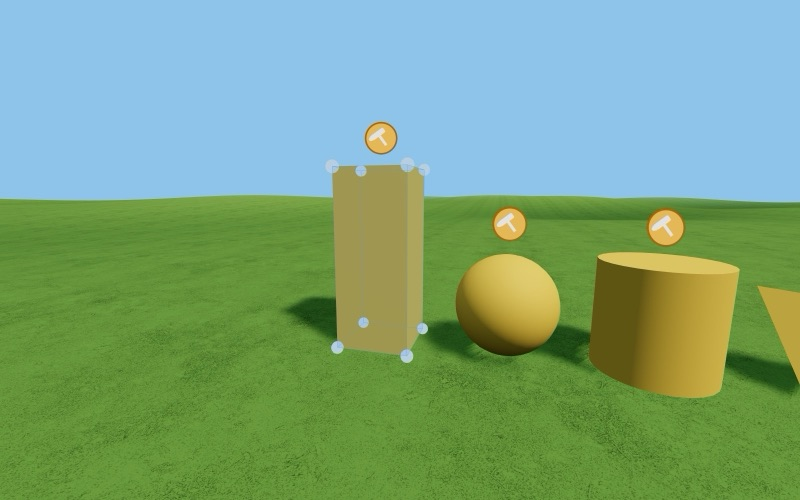
Choose Stretch to Shape and drag a corner. A cube becomes a wall, a plank or a whole roof — and the opposite corner stays put, so nothing drifts.
🔄 Rotate/Move Shape adds rings for turning. Turns snap every 15°, so square corners are actually square.
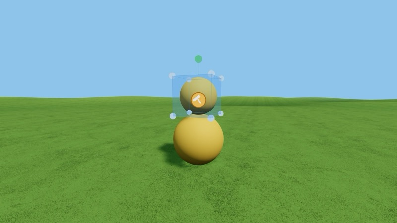
Drag the green ball above the box to move a piece anywhere — up, down, sideways. That is how a head goes on a body and a roof goes on a house.
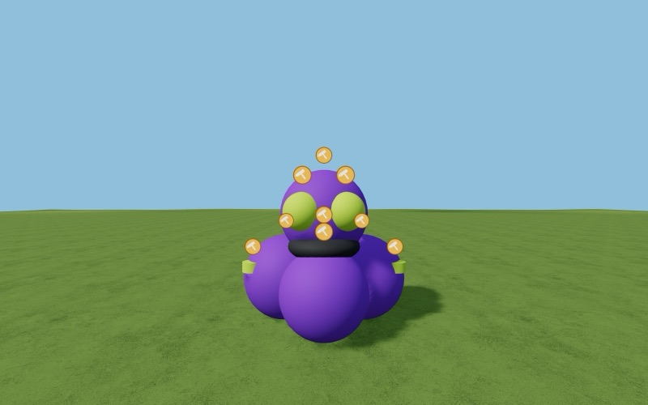
Connect to Primitive lists only the pieces touching this one. Tap to join them, and paint each with Apply Texture — a colour, or a picture.
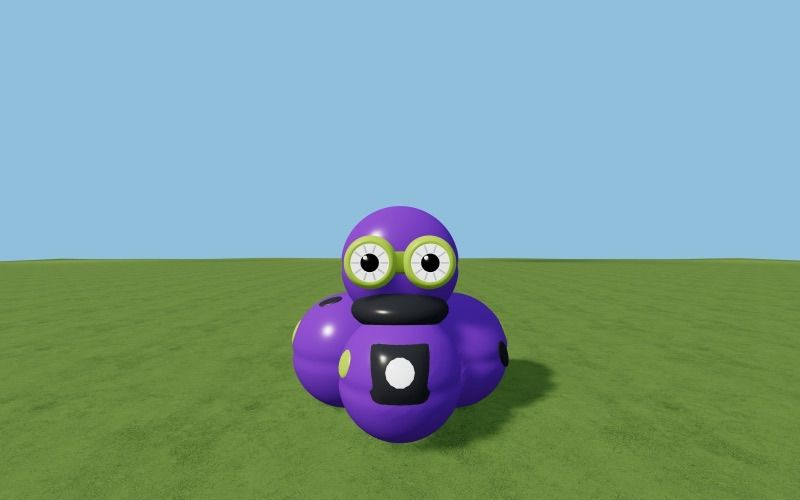
The hammers vanish and the pile of parts becomes one solid thing you can resize, program, save and copy.
🆕 Got your own 3D models? Import a .glb file and it gets the hammer too.
Click anything in any world and press Program. Start with drag-and-drop blocks. When you are ready, pick Basic Beginner, and your blocks turn into Python-style code you can read and type. Switch back any time. Nothing is ever lost.
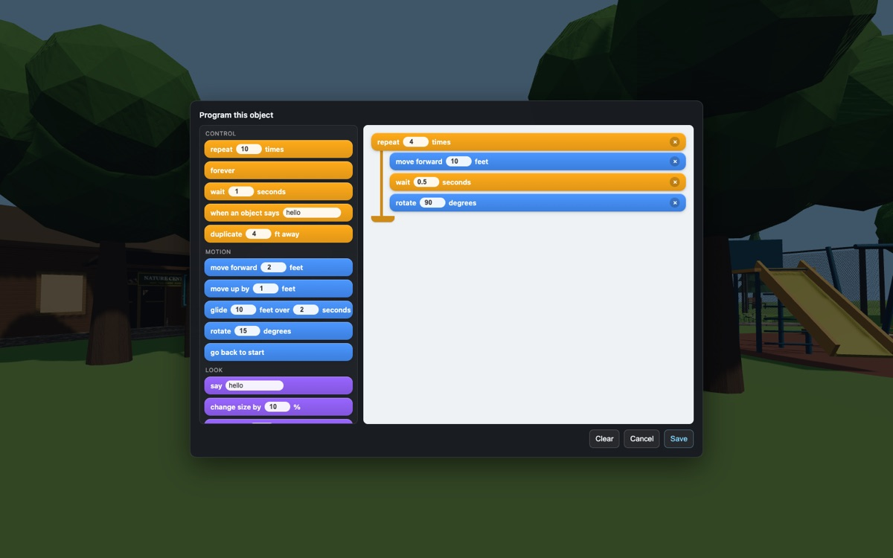
Blocks in four colours: Control (repeat, forever, wait), Motion (move, glide, rotate), Looks (say, size, colour) and Math (numbers you can name). If you have met Scratch, you already know how this works.
The exact same program, typed. Basic Beginner reads just like
the blocks. Basic Pro adds the Python habits: text in quotes,
= and ==. If a line has a problem, a card says what to
change, and Fix it can change it for you.
▶ Every programmed object gets a green play button floating above it. Programs save with the world and start themselves the next time you open it.
Paint a flat shape on the drawing pad and it puffs up into a 3D balloon.
Four blocks put a pen on any object, so it draws a glowing line wherever it goes.
Drop real lights anywhere — and program their colours.
Hang a live web page or a YouTube video on any wall.
One menu click splits the screen for a headset or a phone viewer. Esc comes back.
Your world saves itself as you go. Export it as one small file and hand it to a friend.
Edusim Stages is a stage, sprites, backdrops and blocks, laid out the way anyone who has used Scratch will recognise. Then it does the Edusim things: any of the Model Database's 3D models becomes a sprite you can turn round, Edusim's worlds become backdrops, every script can be read and written as text, and every project can be saved as a video. And when it is ready, 🌍 Convert to 3D World stands it up in Edusim, still running, for you to walk into and play in 3D.
 🪙
🪙
Arrow keys, falling clones, a score and a 30-second timer. Open it, play it, then change how fast the coins fall.
Catch the Coins 🚀
🚀
Riley and Robo fly from the Park to the Moon, two of Edusim's own worlds, told with captions and conversation.
A Trip to the Moon 🫀
🫀
The Model Database's human heart as a sprite: twelve costumes from twelve sides, a heartbeat, and the facts as captions.
The Beating Heart ✨
✨
One star drawn 36 times, turning ten degrees and shifting colour each time. Seven blocks make the whole thing.
Star PatternsEdusim HiFi is built for higher-end computers and a richer visual experience: a living sky that lights everything under it, real shadows, grass and ferns you walk through, photographic stone, timber and metal, and models rebuilt in far finer detail. Everything else is the Edusim you know — every world, the block and Python-style coding, Create Model, Draw, saving and sharing.
Gold-foil lander, a rover with mesh wheels, fractured boulders under a hard sun — and the Earth hanging in a black sky.
▶ The Moon in HiFi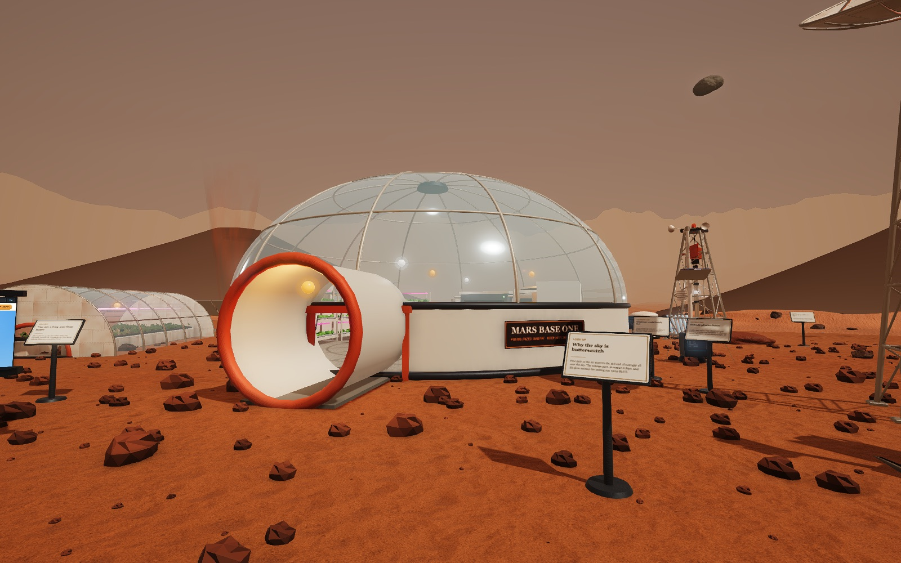
A glazed dome you can walk into, a rover, a lander and a drill rig, on a dusty plain littered with real stones.
▶ On Mars in HiFi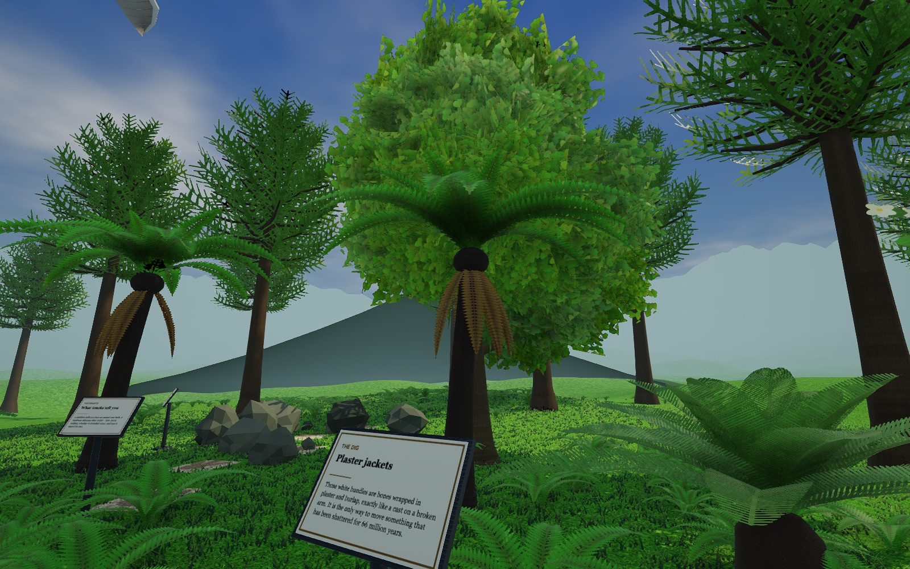
Cretaceous plants modelled as the plants they were: tree ferns, cycads, ginkgos and araucarias over a floor of ferns.
▶ Dinosaur Island in HiFi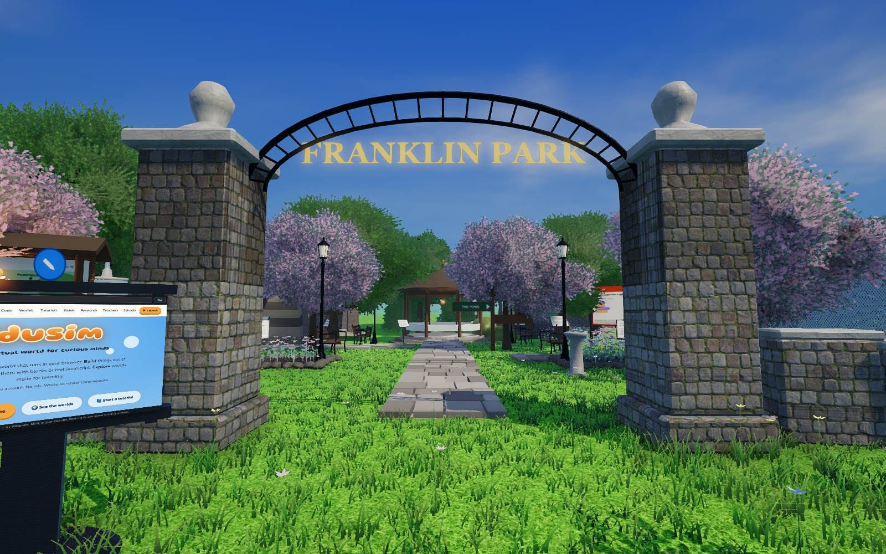
Stone, iron and timber you can read the grain of, trees in leaf and blossom, and grass that parts as you walk.
▶ The Park in HiFi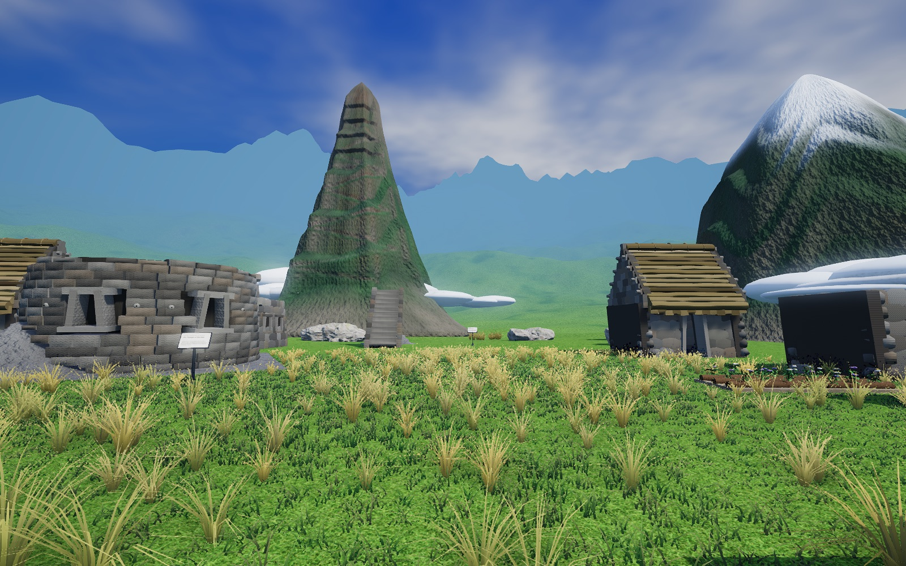
Golden puna grass, red-barked polylepis trees and cloud-wrapped peaks around the stonework.
▶ Machu Picchu in HiFi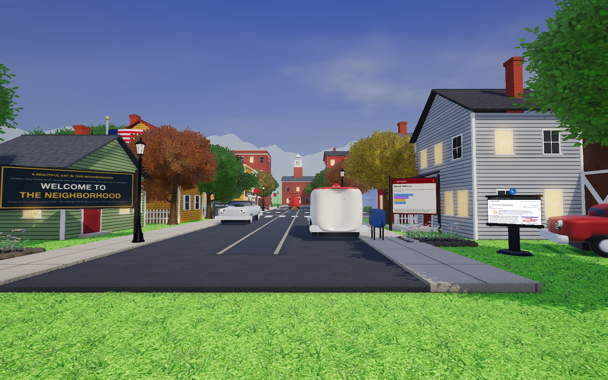
A model town in autumn colour: street trees in green, amber and gold, clipped hedges, lit windows and a trolley on Main Street.
▶ The Neighborhood in HiFiBest on a recent desktop or laptop with a dedicated graphics card. On a Chromebook or an older machine, the standard Edusim is the one to use — it has all the same worlds and tools, and a world saved in either edition opens in the other.
Every world opens with one click — no install, no sign-in — and every one has challenges already standing in it: a board names something nearby, sets it a job, and shows the exact code to make it happen. Here are a few favourites. The World Database has all of them.
🔎 Some worlds have secret doors hidden inside other worlds. Happy hunting.
A city park laid out the way the real ones were more than a hundred years ago. Follow the path to the bandstand, walk under a stone arch bridge, find the pond with the geese, and have a look round the playground.
The Park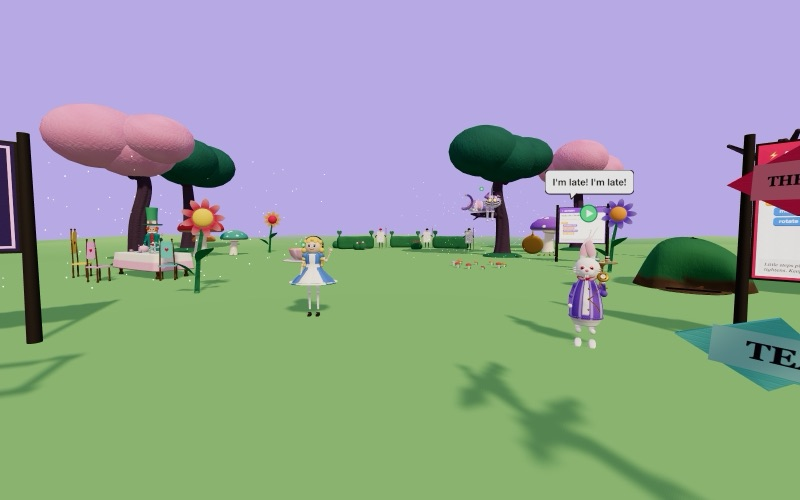
🐇Everyone is exactly where the book left them: Alice waving hello, the Hatter mid-pour at a table crowded with teapots and cake, the White Rabbit late for the burrow right behind him — and the Cheshire Cat fading in and out of his tree on a program you can open and read.
Alice in Wonderland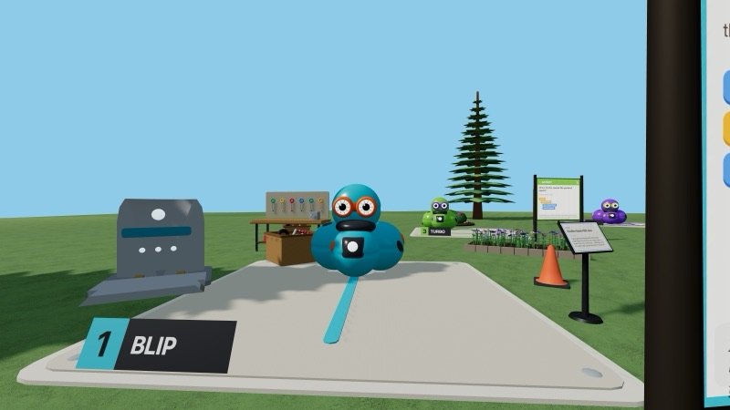
🤖Walk down the avenue and the challenges get harder as you go — from three blocks in a row to a robot that waits for a signal from another robot. The paint on each pad is the path that pad's program should trace, so you can see whether yours came out right.
Robot Challenge World![A stratovolcano with a quarter cut away, standing on a red ash plain under a hazy rust-coloured sky. The cut face shows dozens of nested bands of grey and red rock following the slope, a glowing orange magma chamber at the base, a bright conduit running up to the crater, and dark red dikes fanning out from the chamber. Lava fountains at the summit under a grey ash column. In the foreground five rock specimens stand on colour-coded plinths labelled Granite, Sandstone, Limestone, Shale and Conglomerate, with a black-and-white rock cycle chart at the right and a column of basalt at the left.](assets/screenshots/thumbs/world_volcano.jpg) 🌋
🌋
From outside, a volcano is a hill. This one has a quarter taken out of it, so the cut face shows the magma chamber, the conduit, the dikes — and the alternating beds of lava and ash that make it a stratovolcano. Every bed is one eruption.
Volcanoes & Rocks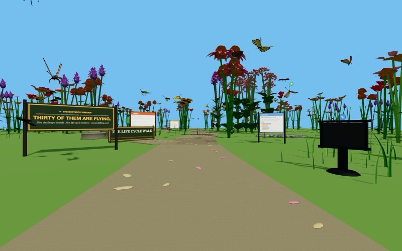
🦋A monarch is as wide as you are tall here, so you can stand on the path and watch its wings beat — about nine times a second, slow enough to see every stroke. Five species are flying, and every one of them flies differently. Follow the walk west and a monarch goes from egg to butterfly, station by station.
The Butterfly Garden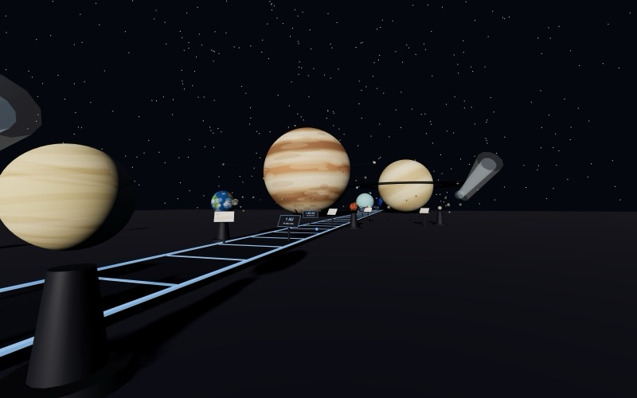
🪐Walk from the Sun out past Neptune. The planets are sized faithfully against each other, so standing Earth next to Jupiter is the whole exhibit — and every marker prints the real distance, which is where it gets silly.
Solar System WalkThe Giza plateau, with the Sphinx in front and Khafre's pyramid rising straight behind it — the view everybody knows. Walk between the three pyramids, find the granite valley temple with not one carving on it, and the cedar ship that was buried in a pit and came out in 1,224 pieces.
Ancient Egypt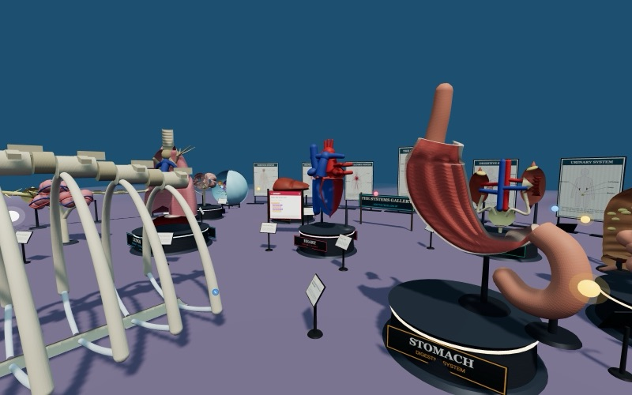
🫀You've been shrunk. Walk in along an artery, duck under a rib cage, and come out in a hall of organs blown up big enough to walk around. Each one is half whole and half cut open — a lung sectioned around its bronchial tree, a stomach opened down the front, a kidney sliced in half, a cell with a wedge taken out. Every sign tells you how big the real thing is.
Fantastic VoyageEvery world lives here — and so does anything you or your class share. Browse it, open a world, or upload your own.
A beating heart, a T. rex, the Taj Mahal, a whole city on a table. Search, spin one round, read its card, and drop it into your world with one click. Point at one to spin it.
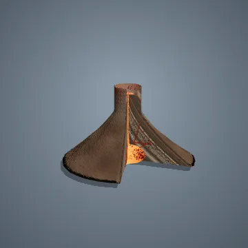
Cutaway VolcanoEarth & SpaceTaj MahalLandmarks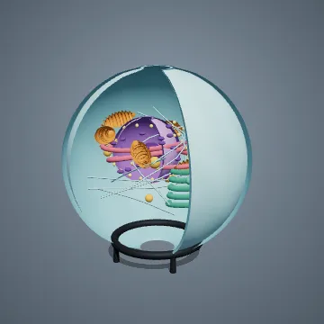
Animal CellHuman Body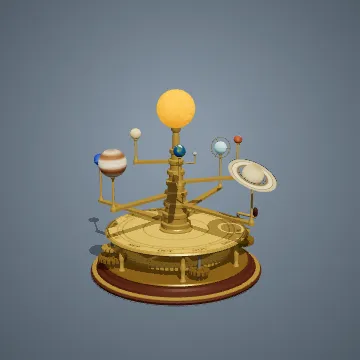
Solar System OrreryEarth & Space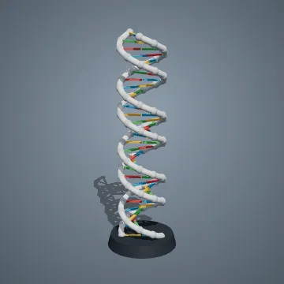
DNA Double HelixHuman Body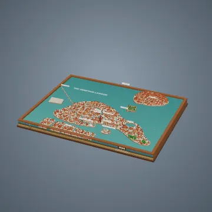
VeniceCity Dioramas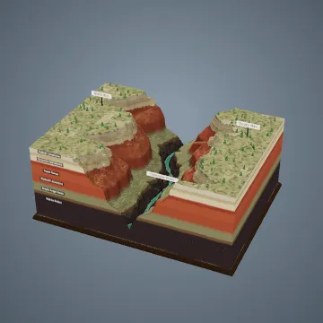
The Grand CanyonWorld Geography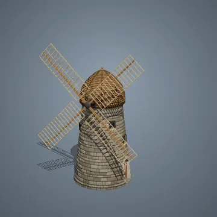
Grain WindmillBuild a Village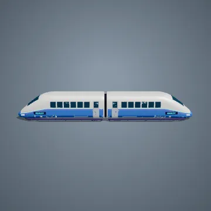
Maglev TrainBuild a Future CityThree free tracks, written for beginners. Every page is printable, and every step says exactly what to click.
Make your first models out of simple shapes.
Program anything with drag-and-drop blocks.
Type the same programs in Python-style code.
What to find, what to read, and two coding challenges to try there — one printable page each.
🖨️ Teachers: every card in the Hands-On Guide prints clean on one or two pages — run off a class set. 📗 Want it all bound together? The Official Edusim Tutorial & Projects Book is fifteen chapters of projects in full colour.
From your very first steps in the Park to a whole town you have built and programmed yourself — 112 full-colour pages of step-by-step projects, with a real screenshot beside every step so you can match it on screen.
Paperback · 112 pages · full colour · 15 chapters · ISBN 9798160064970
Edusim itself stays free — the book is a companion for
classrooms and kitchen tables, never the price of getting in.
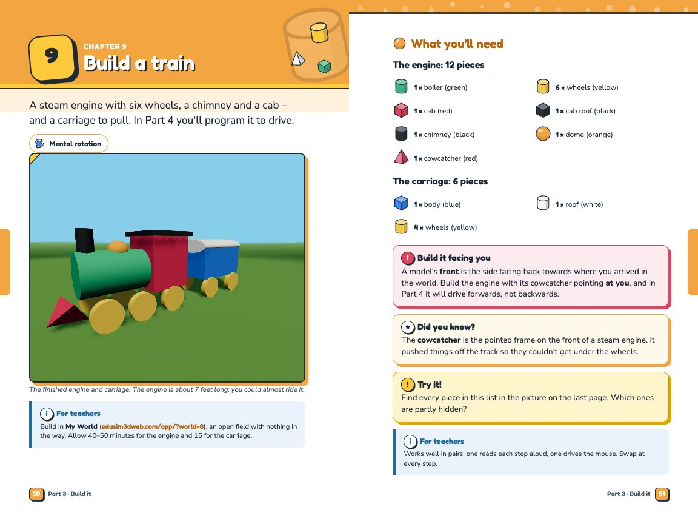
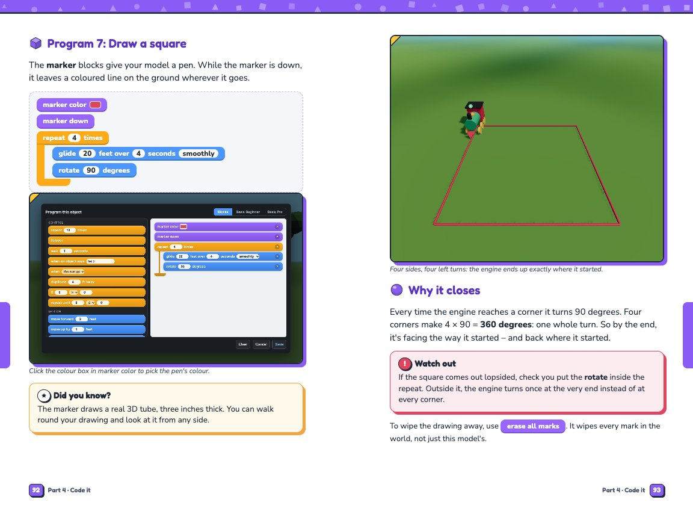
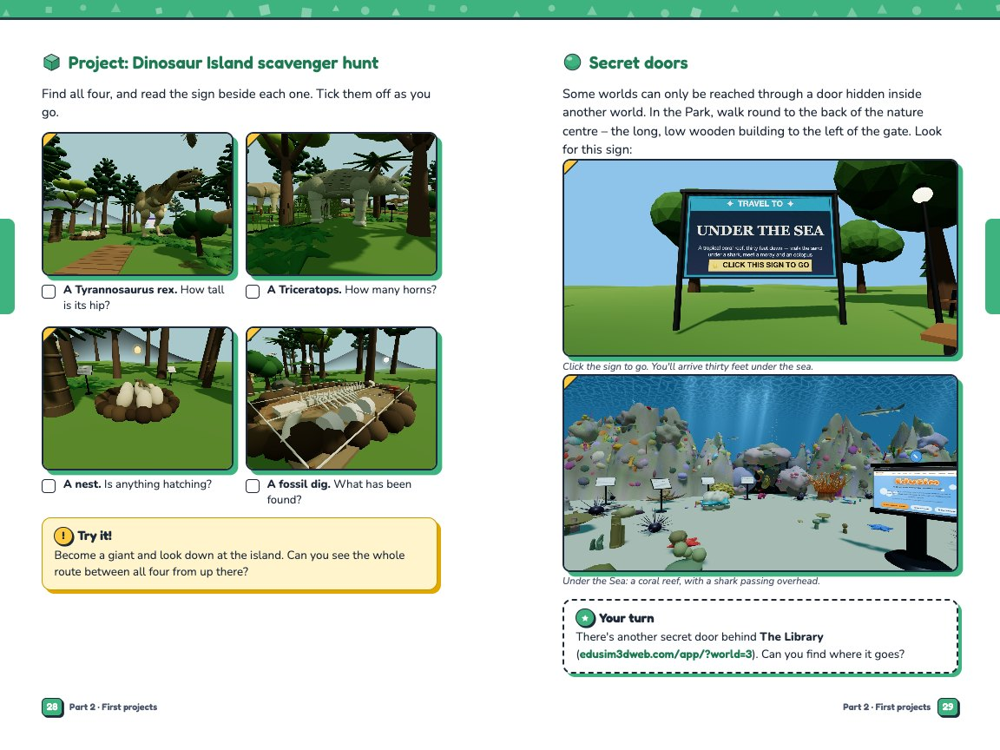
And built on research-based practices — not just kid-tested, but study-backed.
Edusim is the only 3D building-and-coding platform a K–8 teacher can start in thirty seconds — no account, no install, no IT ticket, no cost — with curricular worlds ready to explore on day one.
Edusim is built on one of the strongest findings in learning science: spatial reasoning — picturing, turning and building things in your mind — predicts success in science and math for decades, it's highly trainable, and it grows fastest in hands-on 3D environments with coding. That's not our hunch; it's what meta-analyses spanning hundreds of studies measured. Our Research Library walks through the evidence in plain language and shows how each finding became an Edusim feature.
It is a web page. If the browser opens, Edusim runs — Chromebooks included.
Nobody signs up and nobody talks to strangers. Work is saved on the student's own device.
Students export their world as a file and send it to you. You open it and walk around their work.
Skill cards, world guides and build-along tutorials, all print-ready.
There are no accounts, so there is no teacher dashboard, no rostering and no cross-device save — and no student data is collected, ever. Students save work in the browser and hand it in as a file.
That is the whole trade. It is why there is nothing for a technology department to approve, nothing to purchase, and no consent form — and why a teacher can use it tomorrow morning without asking anyone.
One short email when a new world, lesson plan or printable goes up. Nothing else, ever — and it is a plain email list, not a mailing platform, so your address stays between you and us.
Apps, tutorials, printable cards, lesson plans, the research, and the paperwork a school needs — sorted by who it is for.
The apps and the world galleries
For students — and anyone new
One printable page per world
Lesson plans and classroom know-how
Why Edusim is built the way it is
Everything a district needs to say yes
No sign-up, no download. Just you, a world, and a hammer.